CS184 Project 4 (Clothsim) Writeup
Spring 2023, Yunhao Cao and Yuqi Zhai
Overview
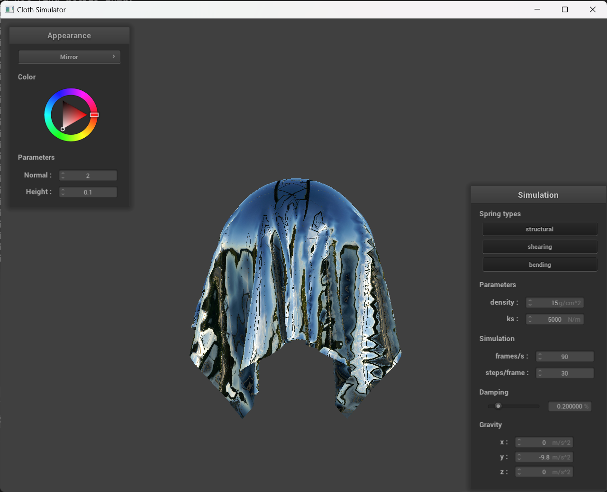
In this projet, we implemented a cloth simulator using the mass-spring system. The cloth is represented by a grid of vertices, and each vertex is connected to its neighbors by springs. The simulation is based on the Verlet integration method. We also implemented shaders to render the cloth and the environment.
Table of Contents
- CS184 Project 4 (Clothsim) Writeup
Task 1: Masses and springs
There are 3 types of springs that we use in simulation:
- Structural
- Shearing
- Bending
The first two offer isometric resistance to stretching and compression within the plane of the cloth. The bending springs provide resistance to deformation in the direction perpendicular to the plane.
To not allow springs to compress to much, we leave out a rest length for each spring.
Take some screenshots of scene/pinned2.json from a viewing angle where you can clearly see the cloth wireframe to show the structure of your point masses and springs.
Show us what the wireframe looks like (1) without any shearing constraints, (2) with only shearing constraints, and (3) with all constraints.
(1) without any shearing constraints:
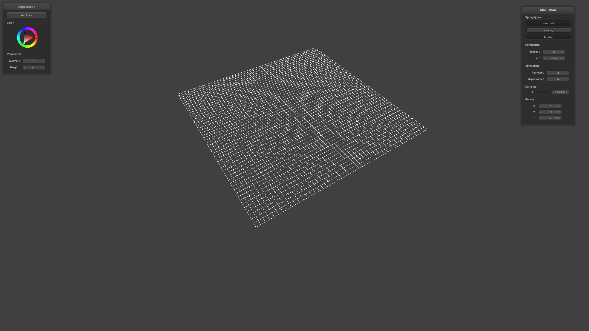
(2) with only shearing constraints:
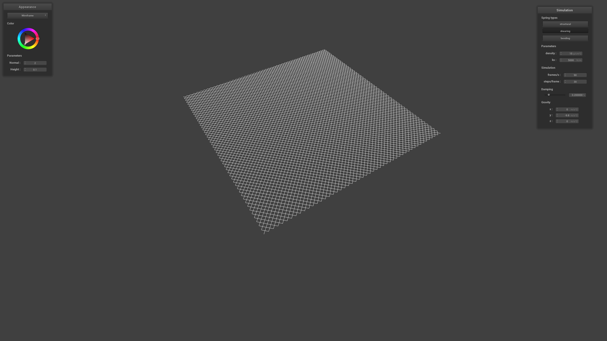
(3) with all constraints:
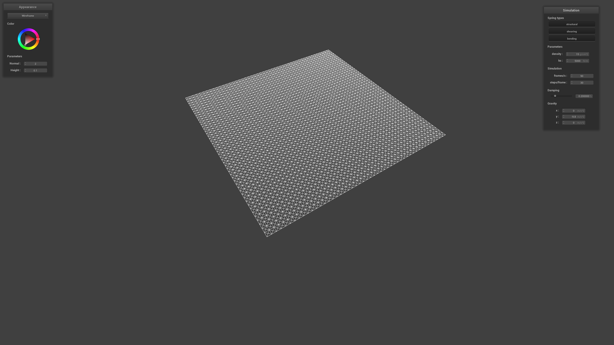
Task 2: Simulation via numerical integration
In this part, we implemented a basic physics simulation of the cloth using the Verlet integration method. This includes external forces, such as gravity, and internal forces between springs.
Experiment with some the parameters in the simulation. To do so, pause the simulation at the start with P, modify the values of interest, and then resume by pressing P again. You can also restart the simulation at any time from the cloth's starting position by pressing R.
Task 2.1.1: Changing
We will change first.
| (N/m) | Result |
|---|---|
| 50 |  |
| 5000 |  |
| 105000 |  |
Starting from at rest, with a low constant, we can see that the cloth will be more collapsed once it reaches the steady state. The cloth appears to be more crumbled together and being more stretched. On the other hand, with a high constant, the cloth appears to be more stiff, as there is little collapse at the top of the cloth compared to the default 5000 N/m .
Task 2.1.2: Changing density
density () |
Result |
|---|---|
| 1 |  |
| 15 | |
| 1500 |  |
Change in density appears to have the opposite trend compared to change in Ks constant. With a higher density, the cloth appears to be more stretched at the end of simulation due to it being heavier compared to the default simulation; with a smaller density, the cloth appears to be much lighter, with merely no collapse on the top of the cloth.
Task 2.1.3: Changing damping
damping |
Result |
|---|---|
| 0 |   |
| 0.2 | |
| 1.0 |  |
At the default damping of 0.2%, the cloth will swing back and forth a couple of times before it reaches a stop. With a low damping percentage like 0.0% that we experimented with, the cloth will swing back and forth infinitely since there is no loss in the energy during each swing. On the other hand, with a high damping like 1.0%, the cloth will gradually fall to the stop position without any swinging back and forth.
Task 2.2: Show a screeshot of pinned4.json
Show us a screenshot of your shaded cloth from scene/pinned4.json in its final resting state! If you choose to use different parameters than the default ones, please list them.
| Wireframe | Normal |
|---|---|
| 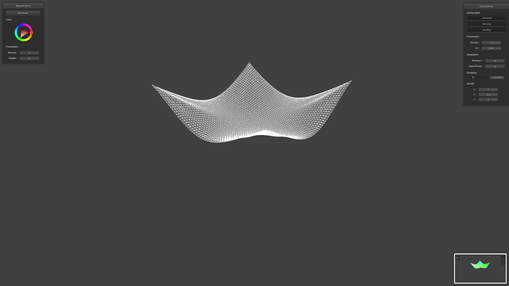 | 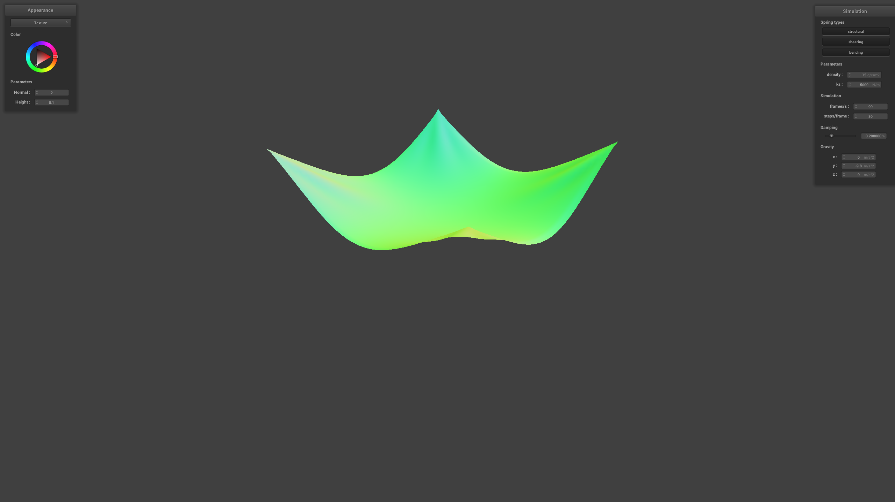 |
Task 3: Handling collisions with other objects
To simulate collisions with other primitive objects, we used shape defintion of their geometries and determined if the vertices crossed the boundary of the object. If so, we would push the vertices back to the boundary.
Show us screenshots of your shaded cloth from scene/sphere.json in its final resting state on the sphere using the default ks = 5000 as well as with ks = 500 and ks = 50000. Describe the differences in the results.
ks |
Result |
|---|---|
| 500 |  |
| 5000 |  |
| 50000 |  |
Compared to the default constant, a smaller constant will result in a more stretched way such that the cloth follows exactly the shape of the underlying sphere without any wrinkles on the primary area of interaction. With a higher constant, we could see there are significantly more wrinkles on the cloth when it falls on the sphere, maintaining a bit more structural integrity or being more stiff in this situation.
Show us a screenshot of your shaded cloth lying peacefully at rest on the plane. If you haven't by now, feel free to express your colorful creativity with the cloth! (You will need to complete the shaders portion first to show custom colors.)
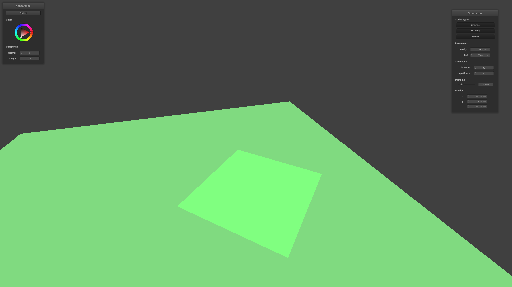
Task 4: Handling self-collisions
To handle self-collisions, we used the same method as in Task 3, but we used the cloth's own vertices as the boundary of the object. We also had to optimize this algorithm to avoid checking every single vertex against every other vertex, which would be very inefficient. We used a grid to store the vertices and only check vertices that are close to each other.
Show us at least 3 screenshots that document how your cloth falls and folds on itself, starting with an early, initial self-collision and ending with the cloth at a more restful state (even if it is still slightly bouncy on the ground).
| Step | Result |
|---|---|
| 1 | 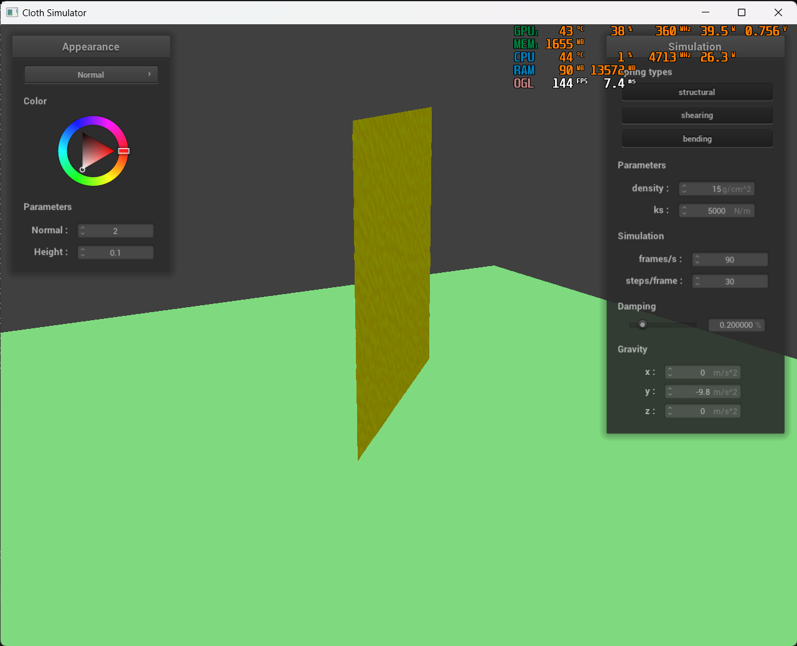 |
| 2 | 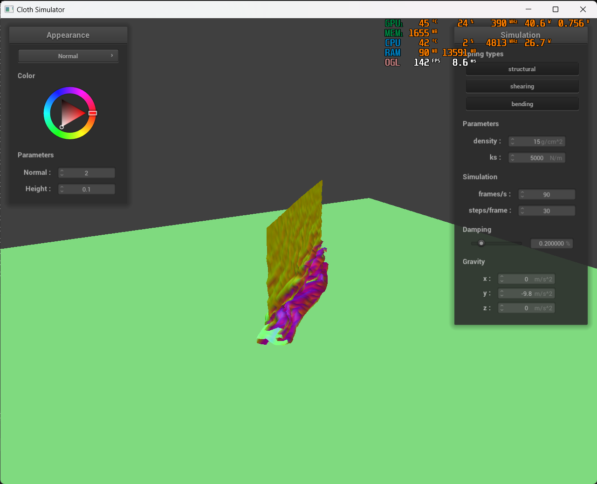 |
| 3 | 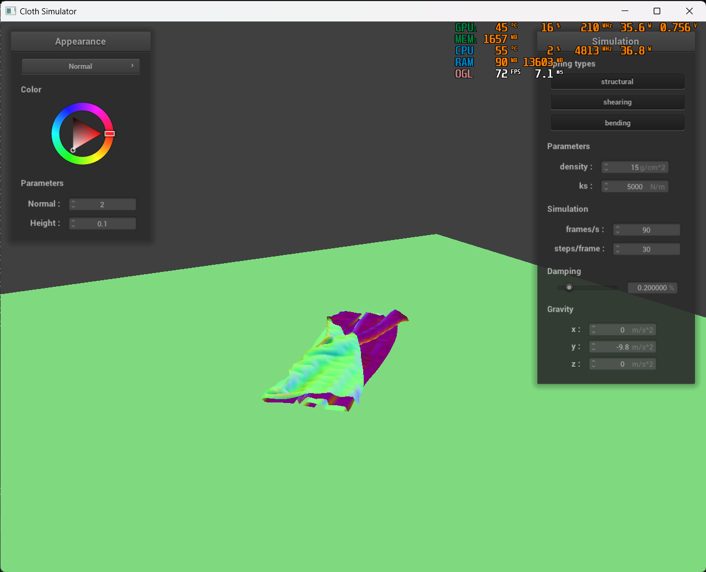 |
Vary the
densityas well asksand describe with words and screenshots how they affect the behavior of the cloth as it falls on itself.
ks |
density = 1 |
density = 15 |
density = 1500 |
|---|---|---|---|
| 5000 |  |
 |
 |
| 500 |  |
 |
 |
| 50 |  |
 |
 |
Looks like varying density will cause the cloth to fall quicker. The constant also affects the behavior of the cloth as it falls on itself. With a higher constant, the cloth will be more stiff and will not be able to fall as quickly as the default simulation. With a lower constant, the cloth will be more flexible and will fall quicker.
Task 5: Shaders
Explain in your own words what is a shader program and how vertex and fragment shaders work together to create lighting and material effects.
Shaders are programs that run on the GPU to perform operations on the vertices and fragments of the objects. Vertex shaders are used to transform the position of vertices of the objects into the screen space. Fragment shaders takes input from the output of a vertex shader and are used to determine the color of the vertices on the screen.
Explain the Blinn-Phong shading model in your own words. Show a screenshot of your Blinn-Phong shader outputting only the ambient component, a screen shot only outputting the diffuse component, a screen shot only outputting the specular component, and one using the entire Blinn-Phong model.
The Blinn-Phong shading model is a shading model that takes into account the ambient, diffuse, and specular components of the lighting. The ambient component is the light that is received by the object regardless of the direction of the light (it acts as a lighting offset to make sure that the scene is illuminated). The diffuse component is the light that is reflected from the object in the direction of the light. The specular component is the highlight that is reflected from the object in the direction of the light to the viewer.
| Ambient | Diffuse | Specular | Blinn-Phong |
|---|---|---|---|
| 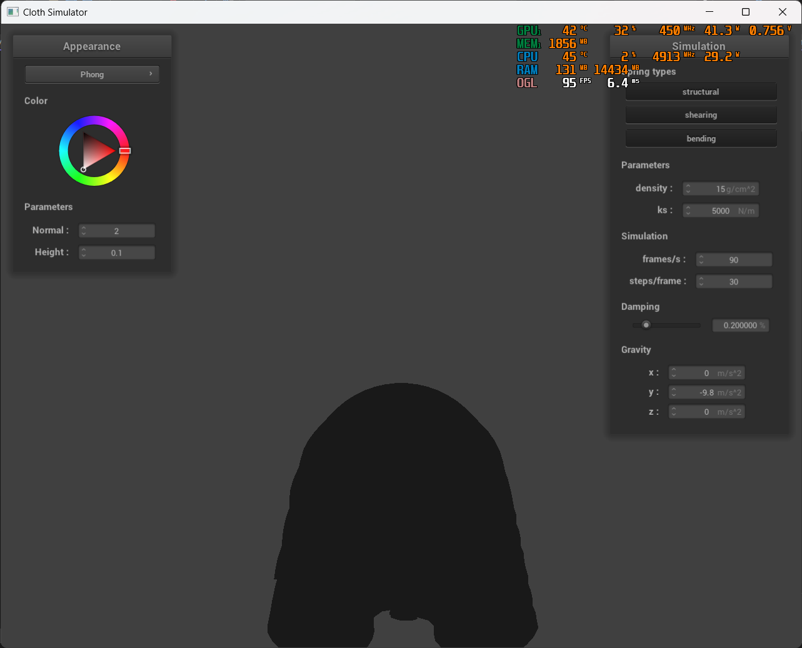 | 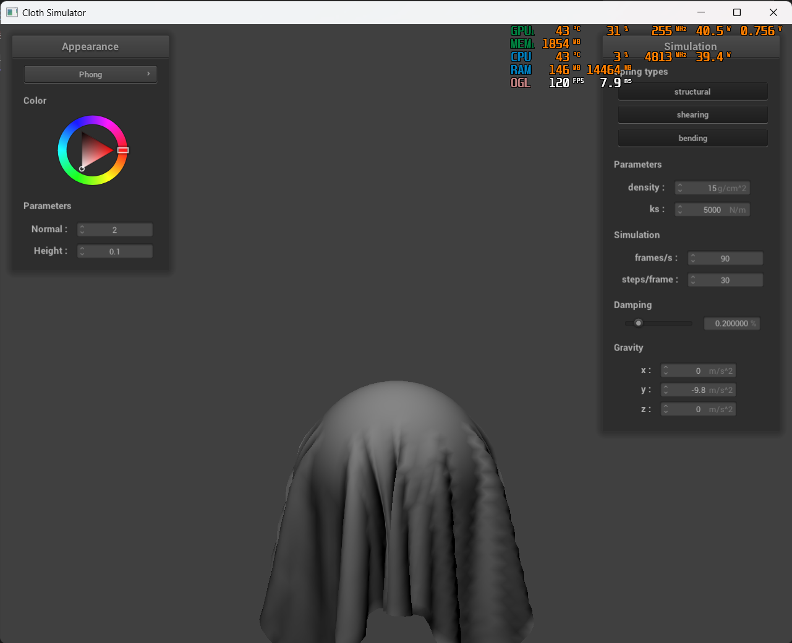 | 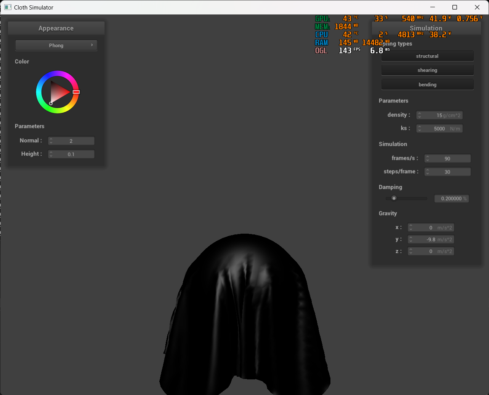 | 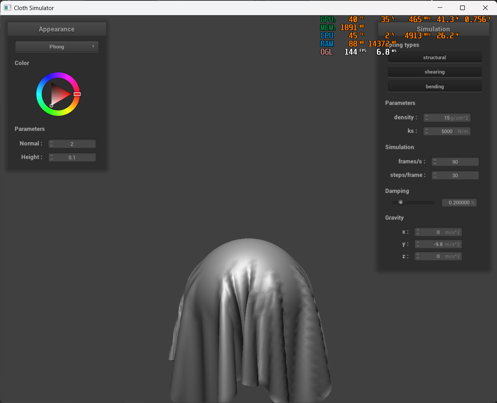 |
Show a screenshot of your texture mapping shader using your own custom texture by modifying the textures in /textures/.
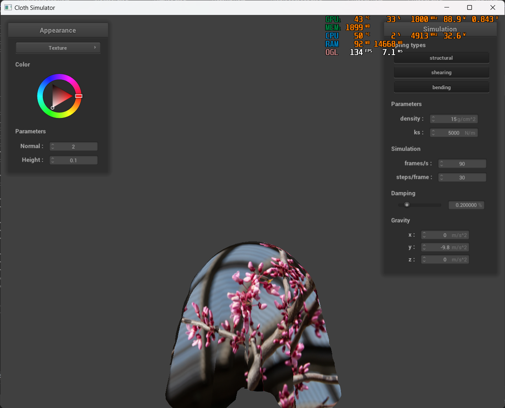
Show a screenshot of bump mapping on the cloth and on the sphere. Show a screenshot of displacement mapping on the sphere. Use the same texture for both renders. You can either provide your own texture or use one of the ones in the textures directory, BUT choose one that's not the default texture_2.png. Compare the two approaches and resulting renders in your own words. Compare how your the two shaders react to the sphere by changing the sphere mesh's coarseness by using -o 16 -a 16 and then -o 128 -a 128.
Let's look at the bump mapping on the cloth
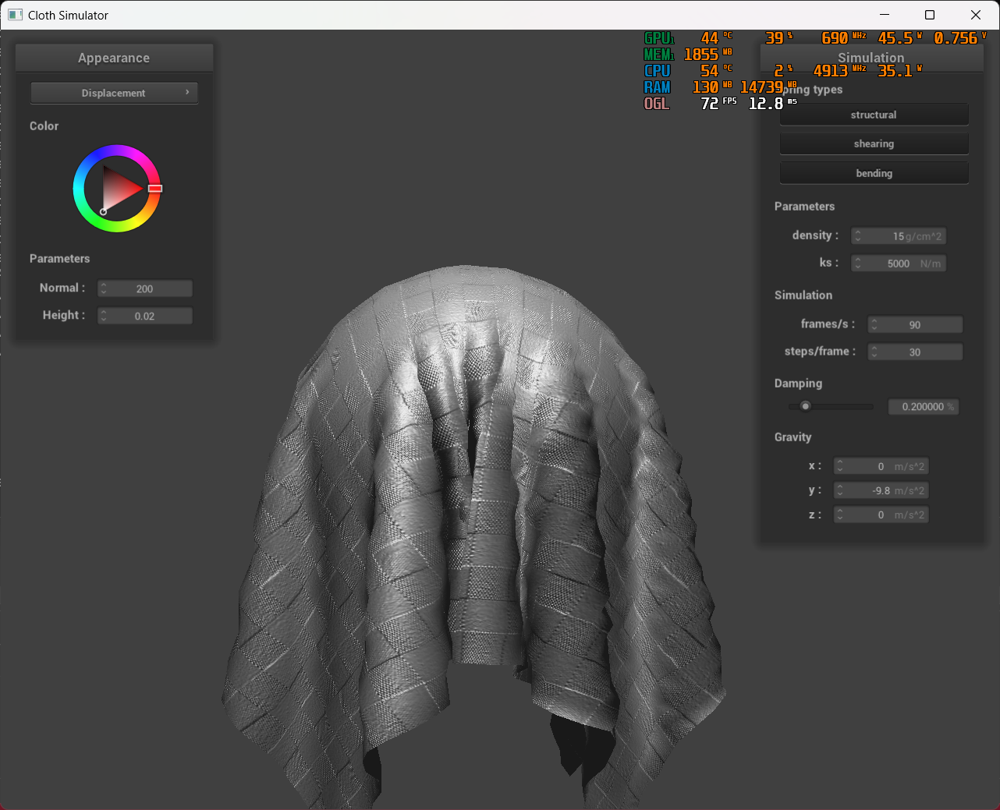
Then let's look at the bump mapping on the sphere
o = 16, a = 16 |
o = 128, a = 128 |
|---|---|
| 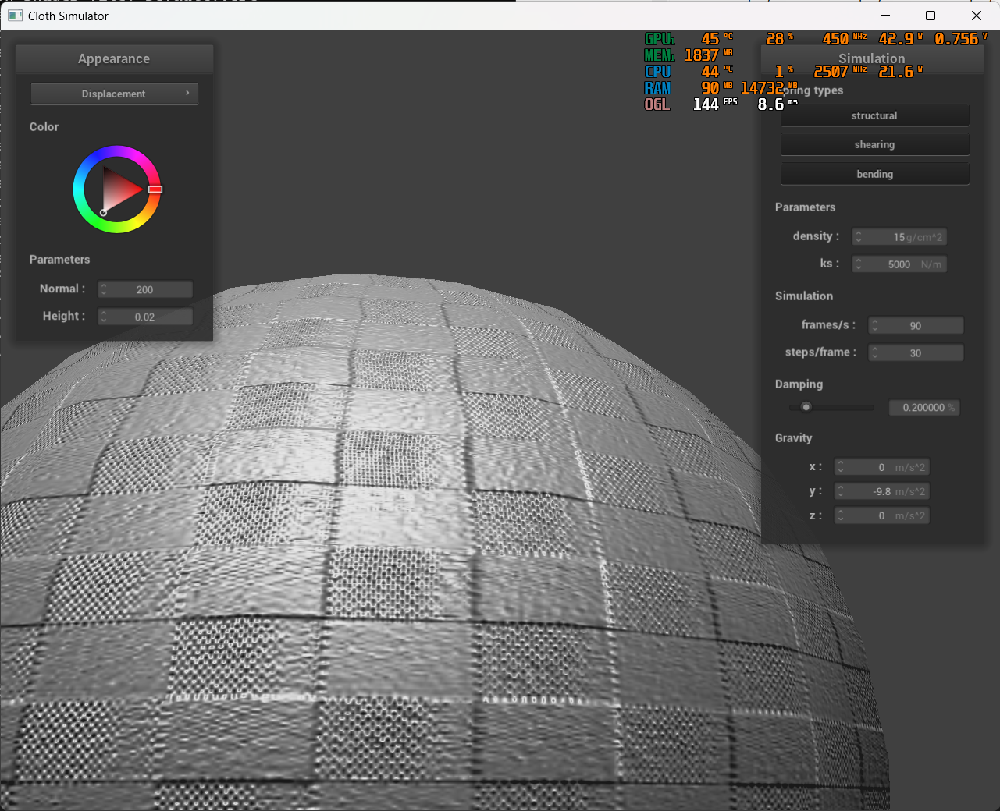 | 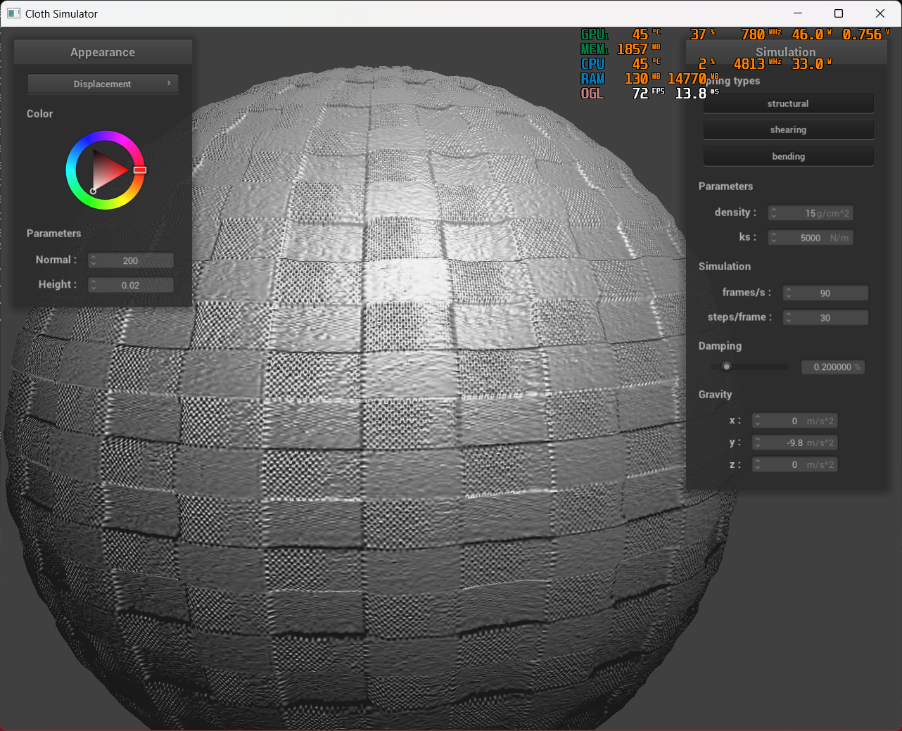 |
We see that although the two parameter sets are similar, with the higher resolution sphere, we see more detail(in terms of vertex displacement) in the bump mapping. The bump mapping on the sphere is more pronounced with the higher resolution sphere while the bump mapping on the lower resolution sphere is more closer to the Normal-only mapping.
Show a screenshot of your mirror shader on the cloth and on the sphere.
Credits and Side Notes
Webpage hosted at quantumcookie.xyz/Opensourced-Study-Notes-Berkeley/CS184/proj4-clothsim-writeup/